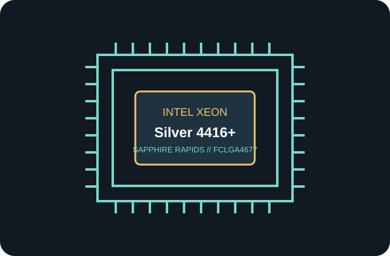

[ COMPONENT RECORD // 4TH GEN XEON SCALABLE ]
Intel Xeon Silver 4416+
Silver tier Sapphire Rapids server processor. Check platform configuration and board firmware support for this exact SKU before installation.

Specifications
| Generation | 4th Gen Intel Xeon Scalable (Sapphire Rapids; Intel 7) |
|---|---|
| Socket / platform | FCLGA4677 (Socket 4677); server platform |
| Cores / threads | 20 cores / 40 threads |
| Base / maximum turbo | 2.00 GHz base / 3.90 GHz |
| Cache | 37.5 MB Intel Smart Cache |
| Processor base power (TDP) | 165 W |
| Memory | 8-channel DDR5-4000; ECC-capable DDR5 RDIMM support |
| PCI Express | PCI Express 5.0; up to 80 CPU lanes |
| Socket scalability | Up to 2 sockets |
Motherboard and BIOS compatibility
- Requires a server motherboard with an FCLGA4677 socket and a chipset/platform designed for 4th Gen Intel Xeon Scalable processors; socket fit alone does not establish compatibility.
- Use only a board whose manufacturer CPU support list explicitly includes the Intel Xeon Silver 4416+. Install the minimum UEFI/BIOS version specified for this exact SKU by that motherboard OEM before fitting the CPU; there is no universal BIOS revision across boards.
- Verify board validation for the listed socket scalability, power delivery and 165 W processor base power, plus the supported DDR5 ECC RDIMM population and speed. Board firmware and DIMM population may limit memory capacity or rate.
Platform notes
This is a server processor without integrated graphics. PCIe lane count, memory speed and capacity are CPU maxima; motherboard routing, firmware, DIMM placement and installed devices determine the realized configuration.
Intel ARK references
- Intel ARK — Intel Xeon Silver 4416+ product lookupIntel ARK search for this exact processor SKU.
- Intel ARK — 4th Gen Intel Xeon Scalable processor collectionGeneration-level Intel ARK specifications and product family reference.